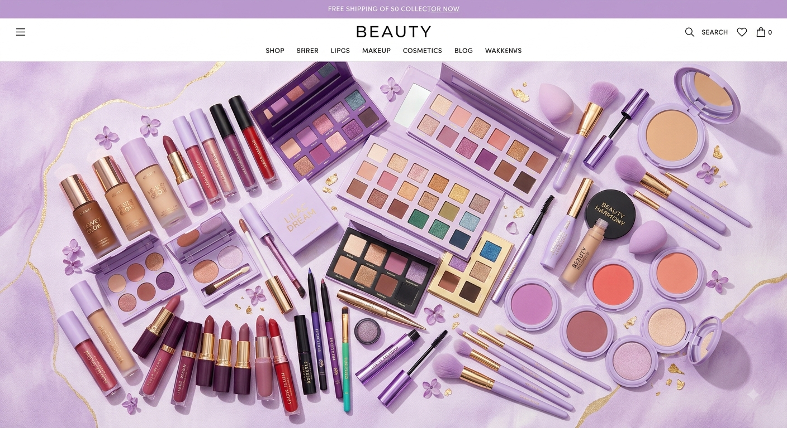

Primeira venda
Sejam bem vindos ao meu site de maquiagem, sempre procurando realçar sua beleza.
Por: Kethylen Vitoria
Venha descobrir variedades de maquiagens diferentes.

Sejam bem vindos ao meu site de maquiagem, sempre procurando realçar sua beleza.
Por: Kethylen Vitoria